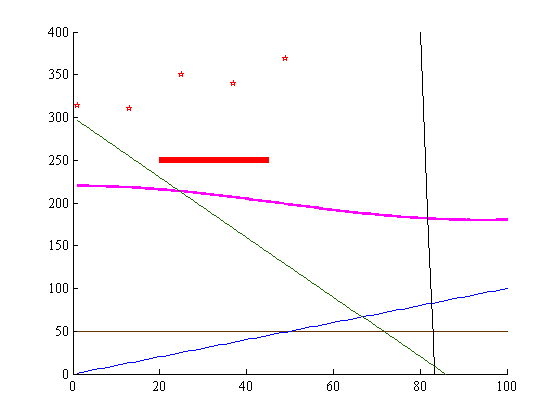
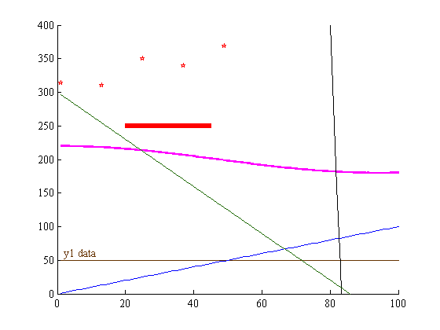
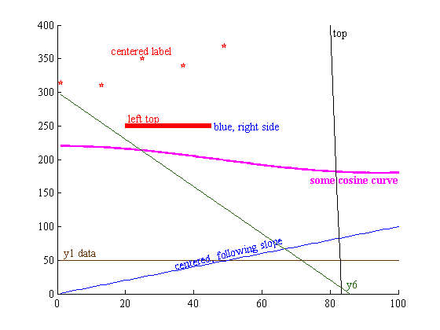
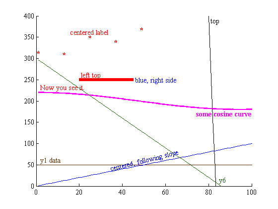
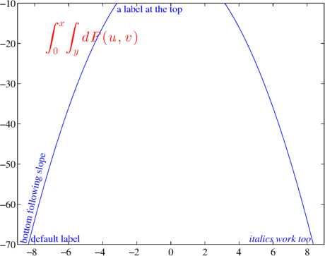
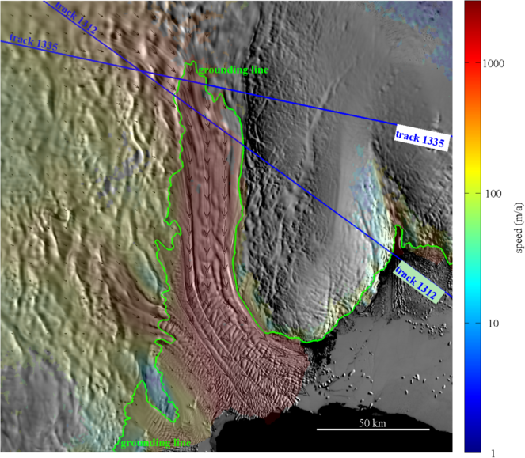

label
This function provides an option between the legend and text or annotation commands for labeling data that you plot. Edward Tufte says that data shouldn't stray far from its label, because the viewer of a graph should not need to repeatedly move his or her eyes back and forth between plotted data and the legend to connect the dots of which data are which. In this spirit, label can be used to place a label directly on a plot close to the data it describes.
Contents
Syntax
label(h,'string') label(...,'location',LocationString) label(...,'TextProperty',PropertyValue) label(...,'slope') h = label(...)
Description
label(h,'string') places 'string' near the leftmost data described by handle h.
label(...,'location',LocationString) specifies location of the string. LocationString can be any of the following:
- 'left' or 'west' (default)
- 'right' or 'east'
- 'top' or 'north'
- 'bottom' or 'south'
- 'center' or 'middle'
label(...,'TextProperty',PropertyValue) specifies text properties as name-value pairs.
label(...,'slope') attempts to angle text following the local slope of the data.
htext = label(...) returns the handle htext of the newly-created text object.
Example 1: A bunch of labels
In this example our plot is rather cluttered and there is no clear place to put a legend. Even if we do put a legend in there somewhere, a colorblind person may have difficulty linking each dataset to its label. First we make up some data and plot it:
% Make up some data: x = 1:100; y1 = 50*ones(size(x)); y2 = 250 + x.^1.2 + 80*rand(size(x)); y3 = x ; y4 = 200+20*cos(x/30); y5 = 1e+4 - 120*x; y6 = 300 - 3.5*x; % Plot data: h1 = plot(x,y1,'color',[.4 .2 0]); hold on; h2 = plot(x(1:12:end),y2(1:12:end),'rp'); h3 = plot(x,y3,'b'); h4 = plot(x,y4,'m','linewidth',2); h5 = plot(x,y5,'k','linewidth',1); h6 = plot(x,y6,'color',[.1 .4 0]); h7 = plot((20:45)',250*ones(26,1),'r','linewidth',6); axis([0 100 0 400]); box off
That looks like a very nice plot, but it is busy. There is no clear place for a legend. Furthermore, as a colorblind American, I cannot distinguish between the colors of lines y1, y4, and y6, so a legend would be of little use. Let's label the lines directly, starting with y1:
label(h1,'y1 data')
 By default, labels are placed near the leftmost part of the data and the label will appear on top of the curve. If you'd like to place a label somewhere else relative to the data, you can do so with the 'location' argument and format further with 'VerticalAlignment' and 'HorizontalAlignment' properties. The 'location' command finds the leftmost, rightmost, centermost, topmost, or bottommost part of your data, and pins a label to that point. The 'VerticalAlignment' and 'HorizontalAlignment' properties can then be used to place the label relative to its pinning point. Following the syntax described in the text documentation, 'VerticalAlignment','top' places a label below its pinning point because the pinning point is on 'top' of the data. If I had my druthers I'd reverse this syntax, but what can I do.
label(h2,'centered label','location','center') label(h3,'centered, following slope','location','center','slope') label(h4,'some cosine curve','location','right',... 'verticalalignment','top','fontweight','bold') label(h5,' top','location','top') label(h6,'y6','location','bottom') label(h7,'left top','location','left') label(h7,' blue, right side','location','right','color','blue',... 'horizontalalignment','left','verticalalignment','middle')
I should be clear that although the text, especially the text following the local slope looks awful in the image above, that's purely a problem with the way that Matlab's publishing script snaps frames. If you save images with a fancy function like export_fig, the text will look smoother, as in the example image for the label function.
You can also return the handle of a label if you'd like:
h4label = label(h4,'Now you see it.','color','r');
Saving label handles lets you delete them easily:
delete(h4label);
...and now it's gone.
Example 2: A bug fix introduced Aug. 1, 2014
After uploading this function, I quickly noticed a bug. If data extended beyond the visible area of the plot and then came back, label would get a little confused. I've tweaked the code to help label make smarter decisions about where to pin a label in this case. Here we plot a parabola and set axes such that the visible plot window cuts off some data:
close; clear; % Gets rid of all the stuff we plotted in Ex. 1. x = -10:.01:10; y = -x.^2; h=plot(x,y); axis([-9 9 -70 -10]) label(h,'default label'); label(h,'bottom following slope','location','bottom','slope') label(h,'a label at the top','location','top') label(h,'italics work too','location','right','fontangle','italic') label(h,'$$\int_0^x\!\int_y dF(u,v)$$','FontSize',20,'location','center',... 'interpreter','latex','color','red')
Example 3: It works on maps, too!
My motivation for creating this function was to automatically label satellite tracks on maps and have the labels follow the arc of the satellite tracks they describe. It was a nice surprise to find out that this function indeed works. I don't expect this exact example to be of use for many folks, but it is provided to show capability. Using modismoa, measures, freezeColors, the Bedmap2 Toolbox for Matlab, and some satellite track plotting functions of my own, we can easily plot and format labels in many different ways
figure('position',[50 50 900 700]) modismoa(-67.1,115,200) freezeColors; measures('speed',-67.1,115,'mapwidth',200,'alpha',.15); measures('vel',-67.1,115,'mapwidth',200,'density',6) scalebar('color','w','location','southeast','length',50); hgl = asaid('gl','color','g','linewidth',2); h1335 = plottrack(1335,'linewidth',2); h1312 = plottrack(1312,'linewidth',2); label(h1335,'track 1335','fontweight','bold','slope') label(h1312,'track 1312','fontweight','bold','slope') label(h1335,'track 1335','fontweight','bold','slope','loc','right',... 'verticalalignment','top','backgroundcolor','w') label(h1312,'track 1312','fontweight','bold','slope','loc','right',... 'verticalalignment','top','backgroundcolor',[.7 .9 .7],'margin',.001) label(hgl,' grounding line','fontweight','bold') label(hgl,' grounding line','location','top','fontweight','bold')
Author Info
This function was written by Chad A. Greene of the University of Texas Institute for Geophysics (UTIG) in Austin, July 2014.